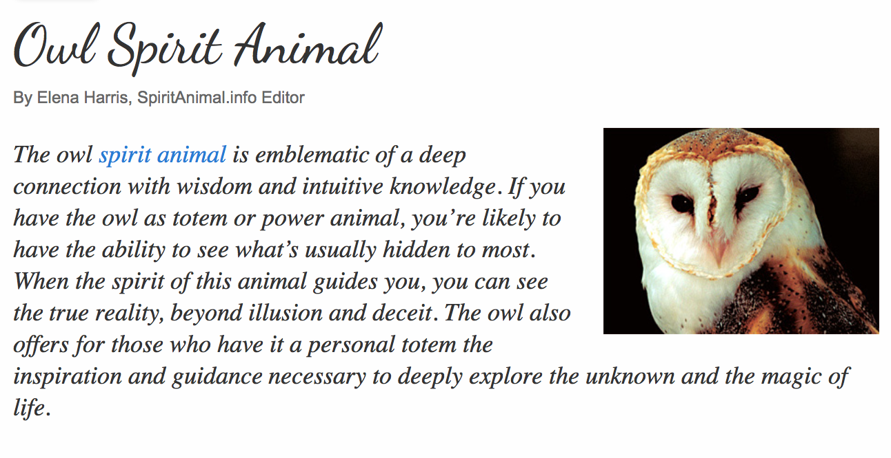
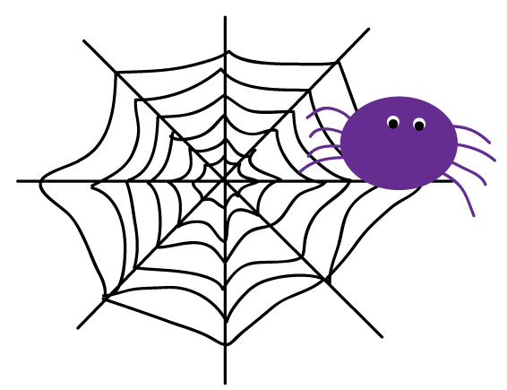
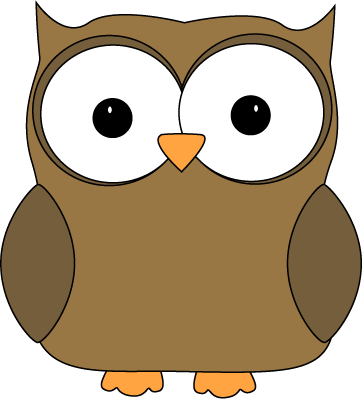
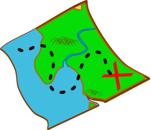

Welcome to My Page!
A Bit About Me: At the moment, my technical and design strengths lie mostly with image/theme creation and video editing. I have had a lot of fun using these mediums to tell stories in the past, and I am always looking to expand my storytelling horizons! I hope that IML 400 will give me the tools I need to be able to bring my dreams to life on the web to the fullest possible extent. According to this spirit animal quiz, my spirit animal is the owl. :)
Explore!
(Navigate Around My Site by Clicking on the Images Below!)
Reading Responses:
Aesthetics of the Internet

Image Courtesy of clipartsign.com.
Tim Berners Lee
Image Courtesy of clipartion.com.
UX/UI
Image Courtesy of clipartion.com.
The Internet as Art
Image Courtesy of clipartion.com.
Virtual Reality

Image Courtesy of mycutegraphics.com.
History of the Web Presentation
Image Courtesy of clipartpanda.com.
Assignments:
Who Dat
Image Courtesy of clipartpanda.com.
jQuery Component
Image Courtesy of clipartpanda.com.
API Example
Image Courtesy of clipartpanda.com.
UX Wireframe Rebrand
Image Courtesy of clipartpanda.com.
Final Project Proposal
Image Courtesy of science-all.com.
{kind=link}
This page is maintained by seshaffe.
This page was generated by GitHub Pages using the Architect theme by Jason Long.